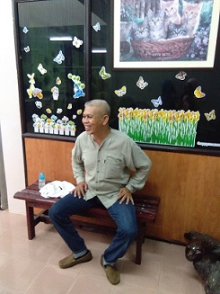
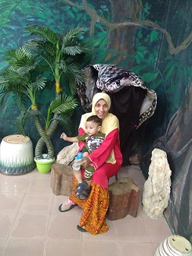
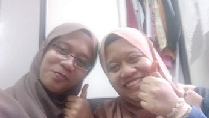
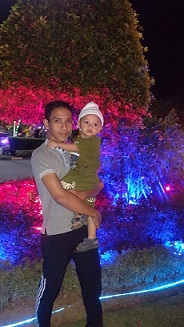
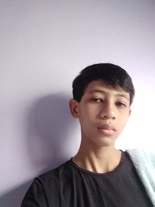
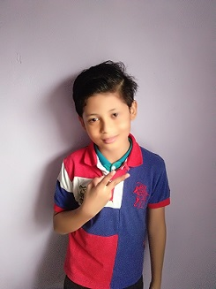
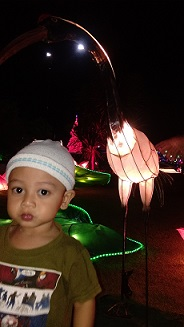

| My Biography | My Family | My Education | My Experience | My Favourite | My Gallery | |
My Father: Sohaimi Bin Ali

My father name is Sohaimi Bin Ali. He now 53 years old. My father and my mother have 12 years gap age. He have four real siblings and four step- siblings. He born in 1967 at Panchor, Perak. After grandfather's death, he lived with his mother since he was 2 years old. He literally not remember his father at all.
My father moving with my grandmother to Kedah when he was around 20 years old. But now my grandmother stay with my uncle at Pahang. He now work as factory operator. Before married, my father have a lot of experience work in many state. My father favourite colour is blue and he very not like black colour until in our house do not have any kind of thing in black colour. My father loves to eat tomyam, mee kari, mee rebus, mee udang, and any kind of food that have prawn in it.
He very dislike food that made from fish that been take care. Her favourite drinks are watermelon juice, milo ice, and teh o ice. My father loves fishing very much. When we at my grandmother village, he must go fishing with my uncle. He also loves to ride high power motorcycle and loves to explore new place. My father is someone that very detail, loves clean space, can not see dirty place, and responsible. He also quite stubborn, loves nag, and loves to clean our house yard. If my mother loves cook, he loves to clean.
My Mother: Che Pian Binti Che Mansor

My mother name is Che Pian Binti Che Mansor. She is 41 years old in this year. She got married when reached 20 years old. My mother have twelve siblings and she was second in family. Her father name is Che Mansor Bin Hussein while her mother name Khadijah Binti Haji Senawi. She loves colour green, purple, and yellow.
She very sensitive, caring, easily moody, and she very do not love people disturb her when cooking. She loves cooking many kind of food, although sometime not work very well. When that cook not well, she will try it again and again. My mother have experience work in two electronic factories around five year but now she was full house wife. She loves to eat laksa, any traditional kuih muih like lepat, tepung bungkus, and many more, and also muruku. Her favourite drinks are fresh orange, and carrot juice.
Her favourite drama are horror drama, and family bounding drama but she not to much watching television. She loves to read books like comic, and horror book and she loves to wear tradisional baju kurung, blouse, long skirt, and slack. She also loves to hear radio and hear music. Her favourite music are ballada music, and dangdut music. She loves to read book that write in jawi very much. My mother always hopes that our family be happy to the after life and my children success in what they do in life.
My Sister aka Twin: Nurul Syamimi Binti Sohaimi

My sister aka my twin name is Nurul Syamimi Binti Sohaimi. She is twenty years old. she is my twin and also the older sister in family. She born early around seven minutes before me. Now she study at University Technology MARA, Branch Perlis. She study in Diploma of Applied Science and now she in semester 4 and need only one semester to finish her diploma.
In primary school, both of as always in same class but when standard 3 we got different class but lastly both of us been put in same class back. This because she seen being cried in class until teacher feel sad to apart us. When reach secondary school, at first we in different class but when form 3 until form 5, we in same class back. Now we in different university and also in different course. She loves to eat my mother sup and the must need in sup is black chili. She also loves tomyam, mee rebus, mee kari, and laksa mee and her favourite drinks are teh o ice, and syrup ice.
She loves to choose many thing that have colour black, red, and green. She loves drama that contain horror, mystery, action, and psychology like Jackie Chan drama. She also loves to watching anime, reading manga, and also book that contain history. Anime that she loves usually in genre romance, comedy, sport, action, slice of life, fantasy, music, adventure, and school.
While type of manga that she loves is time travel, and romance genre. Time travel genre mean genre that show scene when someone die and life back in different time. Right now, she loves to watch anime at anytime. Her favourite musics usually from Haqiem Rusli, Sufian Suhaimi, Naim Daniel, combination Ernie Zakri and Syamel, and band like Akim and Majistret. Now she ambition to be someone in physic field and really do not want to be educator.
My First Younger Brother: Mohamad Ikhwan Effendi Bin Sohaimi

My first younger brother name is Mohamad Ikhwan Effendi Bin Sohaimi. He now is 18 years old. My brother born in Perak at my grandparent village. He born in the year 2002, in March, 24. His favourite drink is milo ice and hot milo. His favourite foods are fried rice and laksa.
My brother loves darkblue colour and black colour. He loves to play online games, like Mobile Legend. His favourite musics ballada music and music that comes from Indonesia people. One of his favourite music is from Peter Pan. My brother easily get moody, very sensitive, and do not like people touch his thing. He also do not like people interfere his problem and loves to be independent. My brother quite stubborn and always take care his appearence anytime he go out. My brother also quite friendly but and sometime he also quite shy.
He and I easily got fight although it was the samll matter. This because both of us not easily give up. He also quite ego. His favourite drama are sport, combination comedy and horror drama, and right now he loves to watch korea drama. He loves to take care his body to ensure his body always fit. Now he is waiting his result UPU.
My Second Younger Brother: Muhammad Afiq Aiman Bin Sohaimi

He is my second younger brother. His name is Muhammad Afiq Aiman Bin Sohaimi. He now is 15 years old. In this year, he will facing PT3 but because what have facing our Malaysia this day i not sure anymore. He now study at Sekolah Menengah Kebangsaan Pekula Jaya (SMKPJ). My brother favourite colour is blue. It can be show because when buying something, he will choose thing in blue colour. He loves to play football, badminton, and playing game.
He always play badminton with my brothers and my father. His favourite game usually fighting game like shooting. My brother hobbies usually tidy our house and repair broke thing. He loves to try new thing when see people do it. He also loves to help my mother do house chores. His favourite foods are chicken rice, and nasi lemak while his favourite drinks are orange juice, and lychee ice. He loves to watch horror, comedy, and action movie and drama.
One of his favourite television program is Running Man. My brother also loves to watch anime and his favourite anime is Owari No Seraph. Not only that, he also listen to music and mostly music from Alan Walker. He always got in trouble although not his own fault and always got fight with his brother. My brother loves to go to beach, and park. His ambition to become firefighter or gamer.
My Third Younger Brother: Muhammad Thaqif Zakwan Bin Sohaimi

He is my third younger brother called Muhammad Thaqif Zakwan Bin Sohaimi. He is now 11 years old. He is now study at Sekolah Kebangsaan Tikam Batu (SKTB). His favourite colour are blue and black. He loves to eat nasi tomato, and chicken cook sause while his favourite drink is soya.
My brother hobbies are play football, playing badminton, and playing games. He loves to adjust his hair everytime people touch it. It just because to look cool everytime. He also loves to play with cat. Although my family not take care cat but there are many cat from neighbourhood come to our house.
He loves to help people although he still kid. My brother loves to loss his thinng, like bottle water, or pencil case. He also loves to create thing from useless item. His favourite song is Sakit song by Zynakal and Yonnyboii. One thing that i do not like is he loves to knock my room everytime.
My Youngest Brother: Ahmad Daiyan Fauzi Bin Sohaimi

My youngest brother is Ahmad Daiyan Fauzi Bin Sohaimi. He is the only one that use Ahmad in front of his name. All of his brother using Muhd or Mohd in front of their name. He got the name Ahmad because my mother want to give something different to the last child. He now three years old. He being born when the year my twin and i need to face Sijil Tinggi Pelajaran Malaysia. He born in Hospital Sultan Abdul Halim in 2017.
My brother start to stand and walk early than speak. He start to speak in his late 2 years and become more good in his 3 years. Although he very late in speak rather than his cousin but when he start speak, no one can stop him anymore. My brother also know how to scold, cry, naughty, loves to mess everyone (mostly his family), and loves sulky.
My brother can very fast copy what people said and do on the spot and do it back to his family. He loves to run, play seek and hide, kick ball, play toy mostly car with big tyre, and loves to try play whatever his siblings play. My brother also really loves to watch car cartoon that have big tyre like excavator and playing games from phone. He also loves to watch television and kid stories and start to know remember the main character name like Omar Hana, Upin Ipin, and Boboiboy.